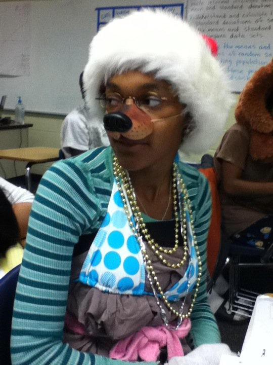
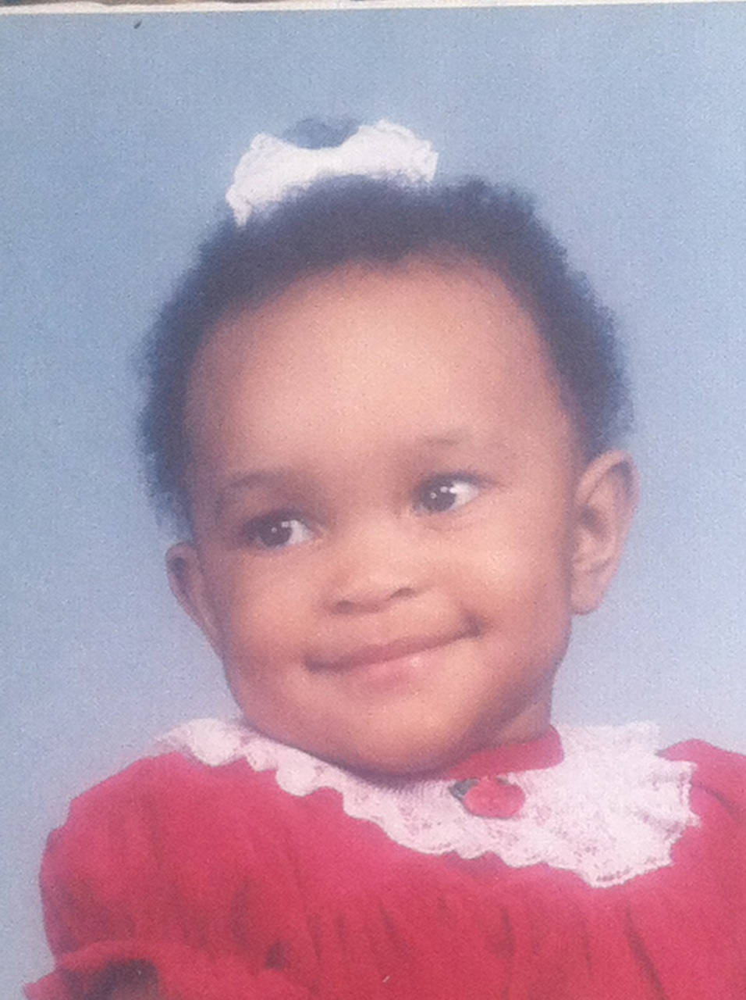
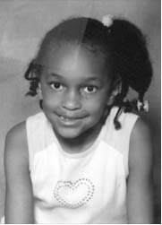
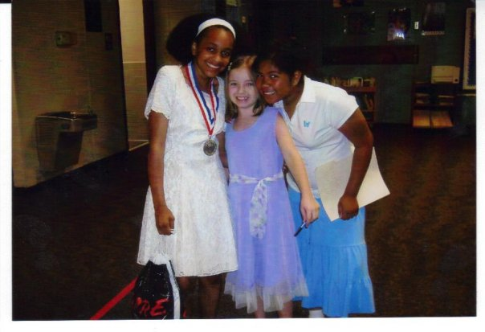
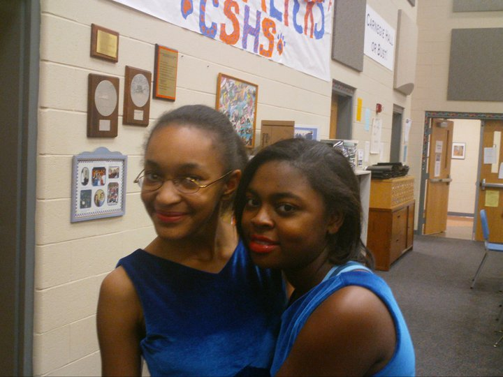
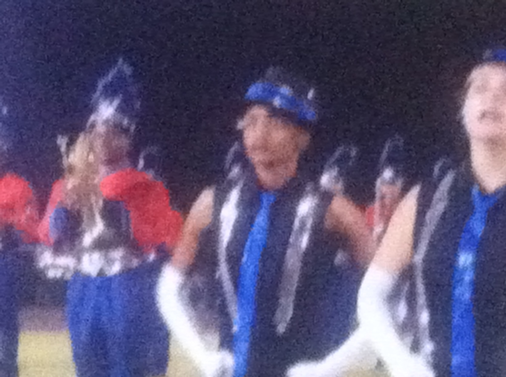
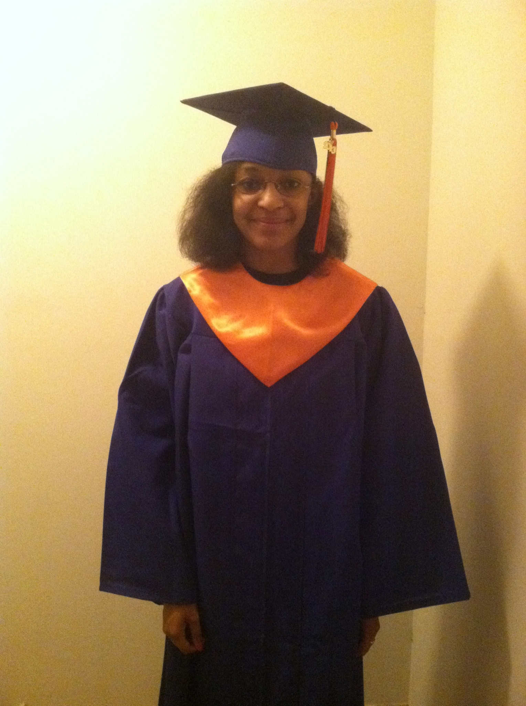

TIMELINE


Hello there and welcome to my (semi-)wonderful webpage! Full of excitement and adventure, we shall take a look into one of God's most famous prized posessions: ME!
Born on September 29th in Athens, Georgia, I made my debut into this world knowing one thing: I will become successful. At a younge age I have always wanted to help people in need whether it be with advice, listening to them or making them feel as a valuable part of society, or even entertaining them with song and dance. At a young age, I participated in musicals and sang at various events. When I went to middle school, I learned how to play clarinet and continued to do so until I completed high school.
During my time in high school, I wanted to become the queen of the universe a forensic scientist. I had my heart set on being filthy rich in the lab environment-helping to solve crime cases and bring justice to families of the deceased.
When I started at UGA, I majored in biology at first, because that's the path I thought I wanted to take in order to obtain that degree. I took a psychology class and realized that I might have more of a passion for that instead. Later on during my first semester, I realized that there was a possible combination of the two passions I have in life: forensic psychology. I switched my major to psychology and now in my third year, I'm debating on which schools to consider for graduate school in hopes of obtaining my PhD and become the best forensic scientist that this country has ever seen!
TIMELINE |
||||||||
|---|---|---|---|---|---|---|---|---|
| Date | Event | Image | ||||||
| September 1994 | A Legend Is Born (me duh) |  | ||||||
| August 1999 | Started Elementary School |  | ||||||
| October 1999-December 2006 | Participated in annual holiday musicals | |||||||
| November 2004 | Became an aunt | |||||||
| May 2006 | Graduated from Elementary School/Won D.A.R.E. Award |  | ||||||
| August 2006 | Started Middle School, picked up learning clarinet | |||||||
| May 2009 | Graduated from Middle School | |||||||
| July 2009 | Joined the High School Marching Band | |
||||||
| August 2009 | Started High School | |||||||
| October 2010-April 2011 | Participated in Show Choir |  | ||||||
| May 2011 | Switched from clarinet to mellophone in marching band | |||||||
| August 2011 | Picked up learning the french horn;got inducted in to BETA Club | |||||||
| May 2012 | Became Drum Major of the Marching Band |  | ||||||
| August 2012 | Joined Student Government Alliance-Secretary | |||||||
| May 2013 | Graduated from High School;obtained first internship/job |  | ||||||
| July 2013 | Started working in retail | |||||||
| January 2014 | Started education at UGA, pursuing a biology degree | |||||||
| June 2014 | Switched majors from biology to psychology | |||||||
| June 2016 | Started working at the UGA Hotel | |||||||
| August 2016 | Left retail job | |||||||
| Present Day | Working on my Junior year of college trying to succeed in life | |||||||
And there you go, a whole webpage about my timeline. In due time, I hope to become a better person within our current society. Or, I could be just like Kermit the Frog-dib and dab into other peoples' business while I sit back and Sip. My. TEA.